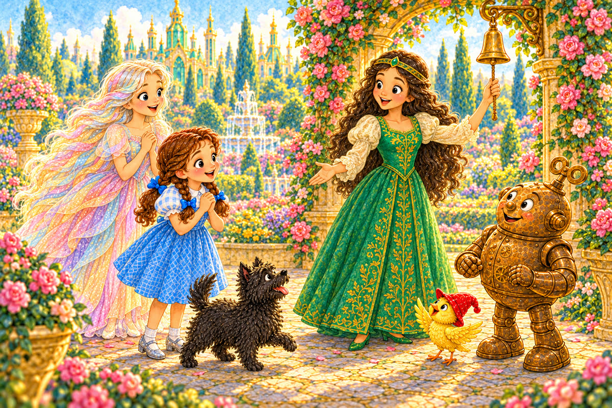
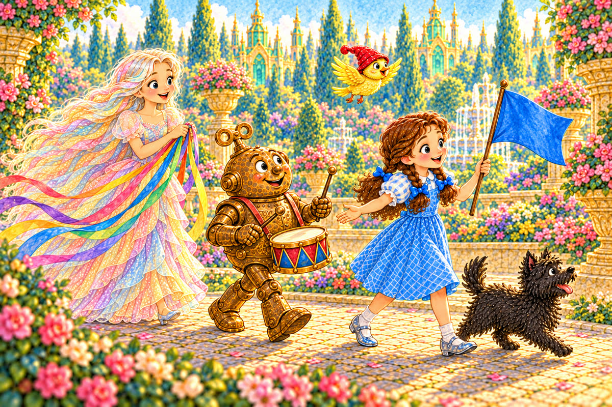
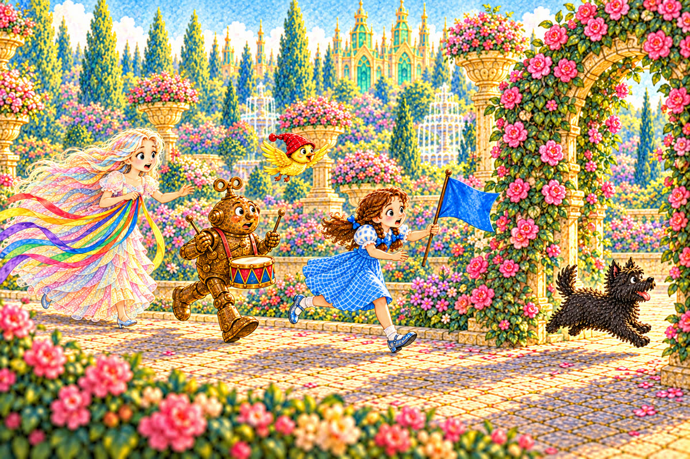
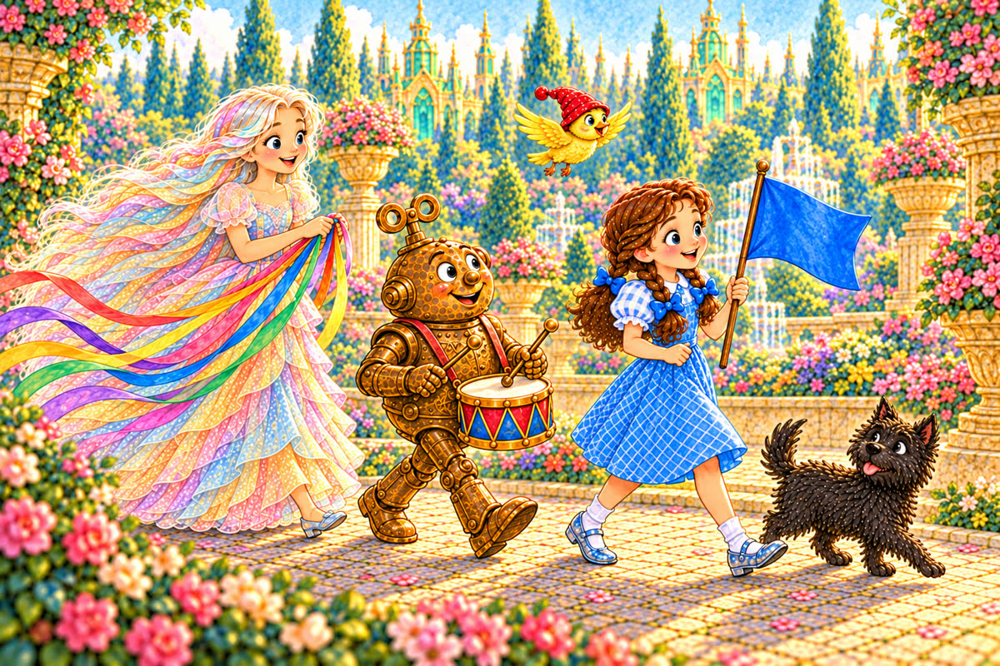
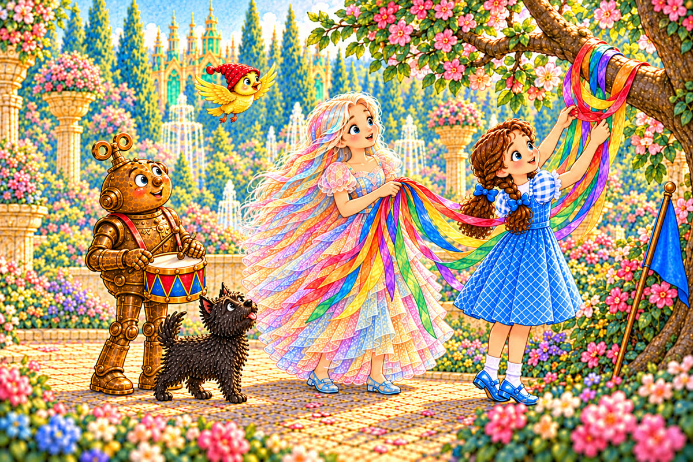
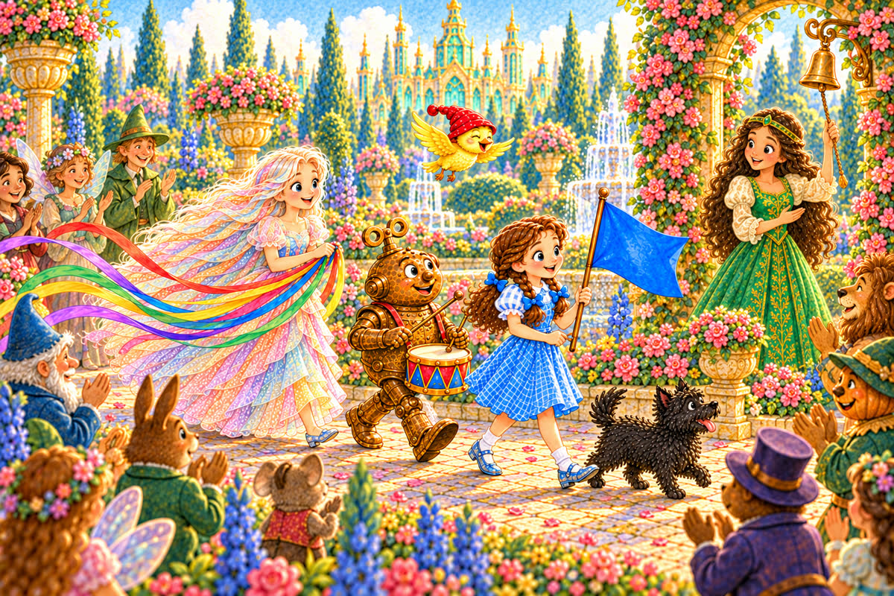
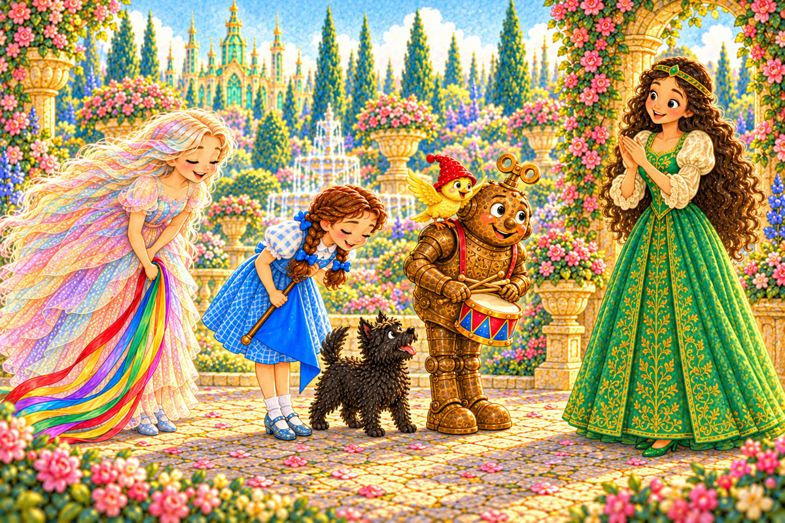

Pahina 1
Isang umaga, nagplano si Ozma ng munting parada sa hardin.
“Magsisimula tayo kapag tumunog ang kampana,” sabi niya.
Naghanda agad ang mga kaibigan.
Isang munting kuwento sa Lupain ng Oz
Basahin ang kuwentong gusto ninyong basahin ngayon. Puwedeng tatlong bagong pahina, mga kard, o pareho.

Isang umaga, nagplano si Ozma ng munting parada sa hardin.
“Magsisimula tayo kapag tumunog ang kampana,” sabi niya.
Naghanda agad ang mga kaibigan.
Inayos ni Dorothy ang kanilang hanay.
Si Toto ang nasa unahan.
Kasunod sina Dorothy, Tik-Tok, at Polychrome.
Lilipad ang ibong dilaw sa itaas nila.

May hawak na asul na bandila si Dorothy.
May mahahabang laso si Polychrome.
May maliit na tambol naman si Tik-Tok.
Magsusuot ng pulang sumbrero at aawit ang ibon.

Nagsimula silang magsanay.
Biglang tumakbo nang mabilis si Toto.
Umabot siya sa arko ng mga rosas.
Naiwan ang mga kaibigan, at nagkahiwa-hiwalay ang kanilang hanay.
Bumalik si Toto nang tawagin siya ni Dorothy.
“Hindi kailangang mabilis,” sabi niya.
“Kailangan nating lumakad nang sabay-sabay.”

Tumugtog si Tik-Tok: tok, tok, tok.
Lumakad sila sa bawat kumpas.
Nasa unahan pa rin si Toto, ngunit hindi na siya tumatakbo.
Biglang umihip ang hangin.
Pumulupot sa sanga ang mahahabang laso ni Polychrome.
Huminto agad ang buong hanay.

Hinawakan ni Polychrome ang mga dulo.
Dahan-dahang kinalas ni Dorothy ang mga laso sa sanga.
Hindi napunit ang mga ito.
Nagpatuloy silang magsanay sa palibot ng bukal.
Umawit ang ibon.
Sabay-sabay silang lumiko, habang nakikinig si Toto sa tambol.
Tumunog ang kampana.
“Magsisimula na ang parada!” sabi ni Ozma.
Naghintay ang mga bisita sa magkabilang tabi ng landas.

Nanguna si Toto.
Kasunod niya si Dorothy na may bandila, si Tik-Tok na may tambol, at si Polychrome na may makukulay na laso.
Lumipad at umawit ang ibon.

Pagbalik nila kay Ozma, yumuko ang mga magkakaibigan.
“Hindi kayo pinakamabilis,” sabi niya, “ngunit nagmasid, nakinig, at nagtulungan kayo.”
Masaya silang lahat.
Kung gusto ninyong mag-usap